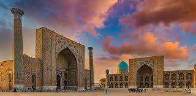

The city is noted as a centre of Islamic scholarly study and the birthplace of the Timurid Renaissance. In the 14th century, Timur (Tamerlane) made it the capital of his empire and the site of his mausoleum, the Gur-e Amir. The Bibi-Khanym Mosque, rebuilt during the Soviet era, remains one of the city's most notable landmarks. Samarqand's Registan square was the city's ancient centre and is bounded by three monumental religious buildings. The city has carefully preserved the traditions of ancient crafts: embroidery, goldwork, silk weaving, copper engraving, ceramics, wood carving, and wood painting.[10] In 2001, UNESCO added the city to its World Heritage List as Samarqand – Crossroads of Cultures.
Dushanbe[a][b] is the capital and largest city of Tajikistan. As of January 2022,
Dushanbe had a population of 1,201,800 and that population was largely
Until 1929, the city was known in Russian as Dyushambe,[c] and from 1929 to 1961 as Stalinabad,
[d] after Joseph Stalin. Dushanbe is located in the Gissar Valley,
bounded by the Gissar Range in the north and east and the Babatag, Aktau,
Rangontau and Karatau mountains in the south, and has an elevation of 750–930 m.
The city is divided into four districts,
all named after Persian historical figures: Ismail Samani, Avicenna, Ferdowsi, and Shah Mansur.